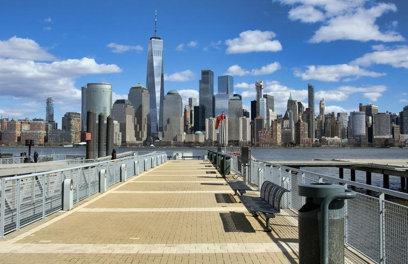

夏日烧烤季正一步步接近尾声，不过，纽约市哈德逊公园(Hudson Park)历史最悠久的蓝调节活动将于10日登场，人们可免费入场，尽情享受一整天的蓝调音乐、美味烧烤等等乐趣，以最盛大的方式挥别烧烤季。
蓝调烧烤节(Blues BBQ Festival)将于8月10日星期六重返哈德逊公园；今年是第24届，全美各地艺术家将齐聚一堂表演蓝调音乐，搭配烧烤和美酒。
音乐爱好者可在两个蓝调舞台之间转场，演出者包括布碌仑长大的歌手兼词曲作家苏特(Alexis P. Suter) 、手风琴家齐德科(Blackcat Zydeco)、主唱暨键盘手和鼓手杨布拉德(Sheryl Youngblood)、以及蓝调音乐奖(Blues Music Award)六度得奖的沃克(Joe Louis Walker)和蓝调乐团Altered Five Blues Band。
表演之余另有各种娱乐活动，从纽约蓝调舞蹈学校的舞蹈课程到现场丝网印刷、另有音乐和戏剧学校 Jalopy Theater 的乐器动物园，适合全家同乐。
哈德逊河公园信托基金(Hudson River Park Trust)总裁兼首席执行官多伊尔(Noreen Doyle)表示，20多年来，蓝调烧烤节一直是真正的夏季主打活动，蓝调音乐和烧烤爱好者齐聚一堂，度过充满歌声、舞蹈、家庭欢乐和美味佳肴的一天。
美味烧烤可圈可点。纽约市标志性烧烤店也将出席，包括Mighty Quinn's提供的Carolina Cue、布碌仑Dinosaur Bar-B-Que提供的南方风味烧烤以及Danny Meyer提供的Blue Smoke；另有国际烧烤特色食物，例如Kimchi Smoke的辣椒酱排骨、Jase's BBQ的加勒比风味牛胸肉、油炸Chicharrones以及来自Time Out Market的多米尼加风格的烧烤。深受喜爱的新泽西州餐厅Big Papa Smokem的Big Papa也将在现场提供古巴风味美食。
La Newyorkina的冰淇淋车将在海滨停靠，提供墨西哥冰淇淋。
蓝调节活动下午1点开始，持续到晚间9点，免费入场。